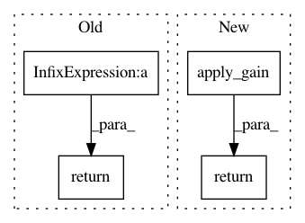

d904481698d271905805bd0f292f1a07e85aadde,nussl/audio_signal.py,AudioSignal,__div__,#AudioSignal#Any#,1112
Before Change
return self
def __div__(self, other):
return self * (1 / float(other))
def __imul__(self, other):
return self * other
After Change
return self.apply_gain(value, overwrite=True)
def __div__(self, value):
return self.apply_gain(1.0 / float(value), overwrite=True)
def __imul__(self, value):
return self * value
In pattern: SUPERPATTERN
Frequency: 3
Non-data size: 4
Instances
Project Name: interactiveaudiolab/nussl
Commit Name: d904481698d271905805bd0f292f1a07e85aadde
Time: 2017-06-21
Author: ethanmanilow@gmail.com
File Name: nussl/audio_signal.py
Class Name: AudioSignal
Method Name: __div__
Project Name: interactiveaudiolab/nussl
Commit Name: 76b86d81185a236cf775fae81f6bdba702b6d5fd
Time: 2017-09-07
Author: ethanmanilow@gmail.com
File Name: nussl/audio_signal.py
Class Name: AudioSignal
Method Name: __imul__
Project Name: interactiveaudiolab/nussl
Commit Name: 76b86d81185a236cf775fae81f6bdba702b6d5fd
Time: 2017-09-07
Author: ethanmanilow@gmail.com
File Name: nussl/audio_signal.py
Class Name: AudioSignal
Method Name: __idiv__